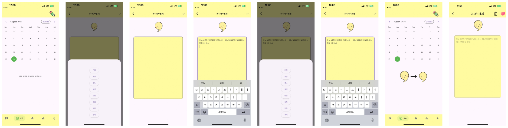
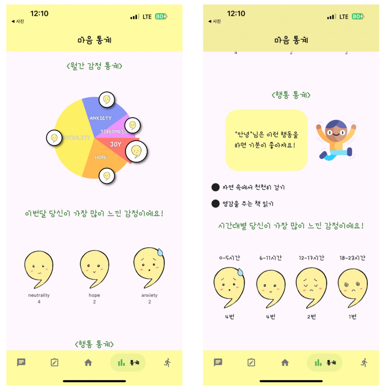
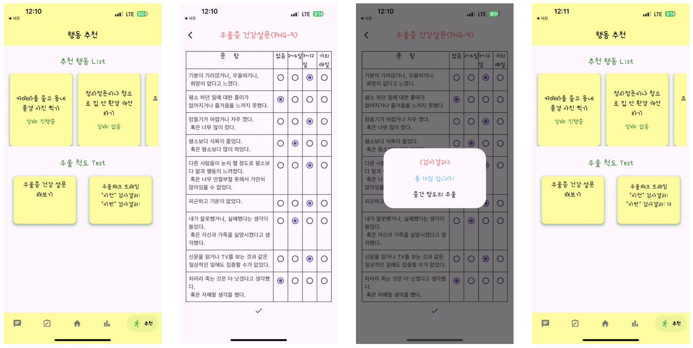

마음씨
우울증 관리 챗봇 및 일상관리 앱
감정 분석 모델과 연동해 일상 기록과 상담을 제공하는 모바일 앱입니다. Flutter·Dart 경험 없이 프론트엔드를 맡아 캡스톤 기간에 일기·감정 통계·우울 설문·채팅 화면과 Spring API 연동을 만들었고, 경진대회에서 대상을 받았습니다.
Spring Boot(MyBatis)와 AI 서버 Flask(KoELECTRA)를 클라이언트에서 각각 호출했고, 행동 추천 화면은 다른 프론트 팀원 영역입니다.
맡은 화면



유지보수 기간의 상태 관리 전환
이후 같은 주제로 2024년 공개SW개발자대회에 출전했으나 예선에서 탈락했고, 캡스톤 기간에 미비했다고 판단한 부분을 개선하려고 유지보수를 이어가며 기술 선택을 바꿨습니다.
문제
캡스톤 버전은 memberId를 보안 저장소에서 화면마다 읽거나 생성자로 넘겼습니다(prop drilling). 화면이 깊어질수록 전달 경로가 길어져 코드가 지저분했고 제가 지향하는 개발 방식과도 맞지 않는다고 판단했습니다.
해결
로그인 정보를 AuthProvider로 올려 SharedPreferences에 영속화하고 홈·채팅·일기·통계·추천·로그인 화면에 적용했습니다. 배경음악은 AudioProvider로 분리해 화면을 옮겨도 이어 재생되게 했습니다. 통계 차트는 Syncfusion Charts가 정해진 차트 유형 위주여서 커스터마이징에 한계가 있다고 판단해 fl_chart로 바꿨습니다.
배운 점
전환은 부분 적용에 그쳤습니다. 행동·일기 작성·통계 위젯·설문 화면에는 생성자 전달이 남아 있습니다. 전역으로 올릴 값과 화면에 남길 값의 경계를 먼저 정하지 않으면 두 방식이 섞인 채 남는다는 것이 이 프로젝트에서 남은 점입니다.